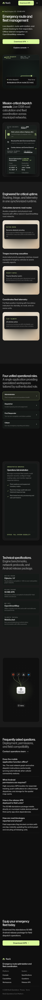
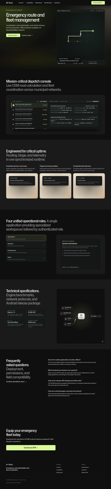
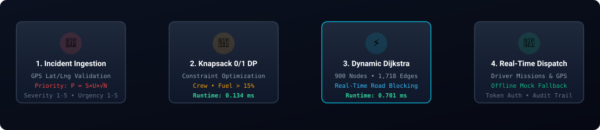

EMERGENCY ROUTE & RESOURCE
MANAGEMENT ENGINE
Next-generation urban emergency response. High-throughput 0/1 Knapsack resource triage, sub-second dynamic Dijkstra routing over Karachi's road network, and real-time telemetry for first responders.
IN CRITICAL EMERGENCY DISPATCH, SECONDS DECIDE SURVIVAL. RES-Q CONVERTS URBAN GRIDLOCK INTO PREDICTIVE LIFE-SAVING CORRIDORS.
Traditional emergency dispatching in congested megacities suffers from disconnected telemetry, static routing oblivious to live blockages, and arbitrary responder allocation. When golden-hour response windows close, outcomes turn fatal.
Res-Q bridges the critical divide. By pairing mathematical resource optimization with continuous graph recalculation over 900 Karachi road vertices, Res-Q ensures the nearest, most capable responder reaches the patient with zero guesswork.
THE INCIDENT LIFECYCLE
From the instant a citizen triggers an SOS to safe hospital intake.
Instant SOS & Geolocation
One-touch emergency beacon transmits precise GPS coordinates, incident classification, and severity score to central dispatch in under 200ms.
0/1 Knapsack Resource Triage
Dynamic programming solves multi-criteria resource allocation, matching critical patient demands with responder equipment, fuel, and proximity.
Dynamic Dijkstra Routing
Evaluates 1,720 Karachi road edges with live congestion penalties and blockage avoidance, calculating fastest path in < 45 milliseconds.
Responder Turn-by-Turn Guidance
Driver receives turn-by-turn navigation; central dispatcher monitors real-time fleet coordinates; hospital prep team receives live ETA countdown.
THE ALGORITHMIC ENGINES
Deterministic algorithms engineered for zero-failure emergency optimization.
0/1 Knapsack Multi-Resource Optimization
In mass-casualty or concurrent incident surges, responders are a bounded knapsack. Res-Q scores each emergency by severity (Medical 10, Fire 8, Accident 6), evaluating responder capacity and travel penalty to maximize life preservation.
Dynamic Dijkstra with Road Congestion Penalty
Karachi's arterial corridors experience sudden blockages and peak-hour friction. Res-Q weights edges dynamically using live reports: weight' = length × (1 + congestion_multiplier). If an edge is blocked, weight becomes infinity.
KARACHI FLEET GRID & HOSPITALS
Active responder nodes and hospital trauma centers mapped across the metropolitan area.
THE RES-Q MOBILE CLIENT
Engineered with Flutter for instantaneous feedback under high stress.
One-Tap SOS & Status Tracking
Immediate distress trigger, automated location pinning, real-time responder arrival timeline, and offline incident caching.

Central Karachi Triage Grid
Global overview of emergency queues, Knapsack 0/1 auto-allocation suggestions, hospital triage capacity, and dynamic road closure overrides.

Dijkstra Turn-by-Turn Navigation
Continuous live rerouting around road closures, hospital destination handover, and arrival timestamp verification.

DOWNLOAD RES-Q ANDROID APK
Get the complete production release package. Pre-bundled with Karachi road graph, offline-first fallback, and role-based demonstration profiles.